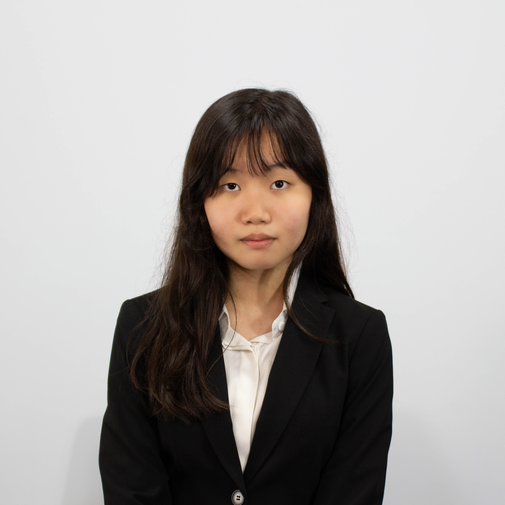

Chair Letter
Esteemed delegates, staffs, guests, and directors,
Welcome to KISMUN 2025. I am Jiwoo Nam, and it is an honor to serve you as a chair with my co-chair Siwoo Kim in WHO. For all delegates in WHO, it is an overarching goal for us chairs to make a memorable experience in our 3-day conference.
The World Health Organization aims to improve global health, and for that goal, delegates must propose a solution to pursue their own benefits while achieving the global initiative of attaining the highest possible level of health. During the process, it is natural for delegates to collide and clash like tides against rocks. What matters though, is that by those collisions, the rock carves away, losing its sharp form. MUN is a process of carving a sharp edgy rock with the weakest waves. It may seem as if the waves would not do any damage, time and effort manages to carve it away. The time and effort you put in may be meager but not worthless. Your wave will finally hit the rock, and the results will show as time passes by.
MUN is nothing to be afraid of. It is a process of collaboration rather than contention, and a podium to express rather than to fear. Progress matters more than consequence, and the values we are looking for are in communication, not in speech. To where courage leads you is where you will discover, and us chairs are present to assist you throughout your journey. Your discovery on this journey may take different forms, but it is most important for you to not give up. So do not be afraid to raise your placards, rise from your chair and up on the podium, and let this journey begin.
Again, welcome to the World Health Organization of this year’s KISMUN. May this journey lead to discovery.
With gratitude,
Jiwoo Nam
Head Chair of the World Health Organization, KISMUN 2025.
/_DSC8486.JPG)
/IMG_0102.JPG)
/IMG_0118.JPG)